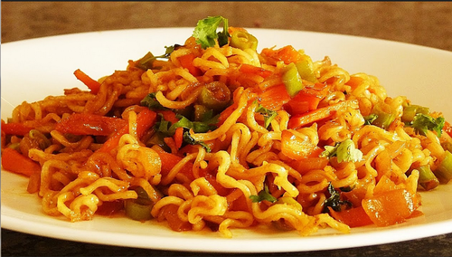

Maggi Recipe

2 Minutes Noodles
Maggi noodles are dried noodles fused with oil, and sold with a packet of
flavorings.
These noodles are usually eaten after being cooked in boiling water for 3
to 5 minutes or eaten straight from the packet.
Ingredients
Steps:
- Take one and a half cup of water in a pan.
- Heat the pan on medium flame.
- When the water comes to boil, add the Noodles Cake to the pan.
- Cover it with a lid for a minute.
-
After a minute, uncover the lid and add the tastemaker to the pan.
- Mix it well.
- Without breaking the Noodles.
- Switch off the flame when all the Water boils.
- Enjoy the hot Maggi in this lovely weather!